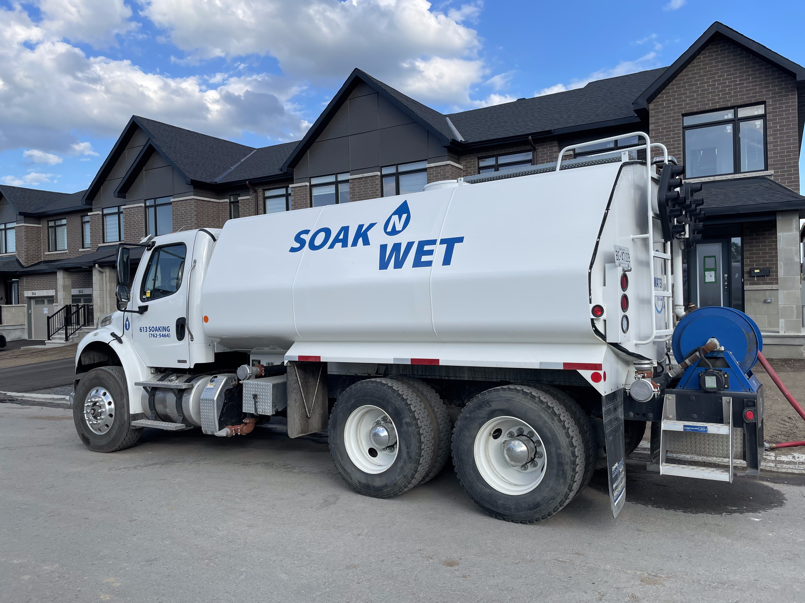
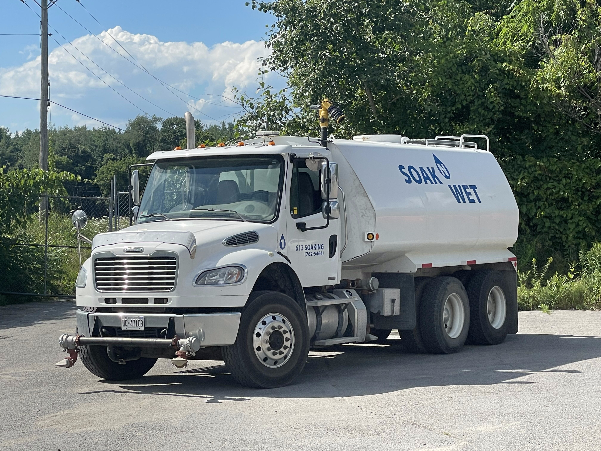
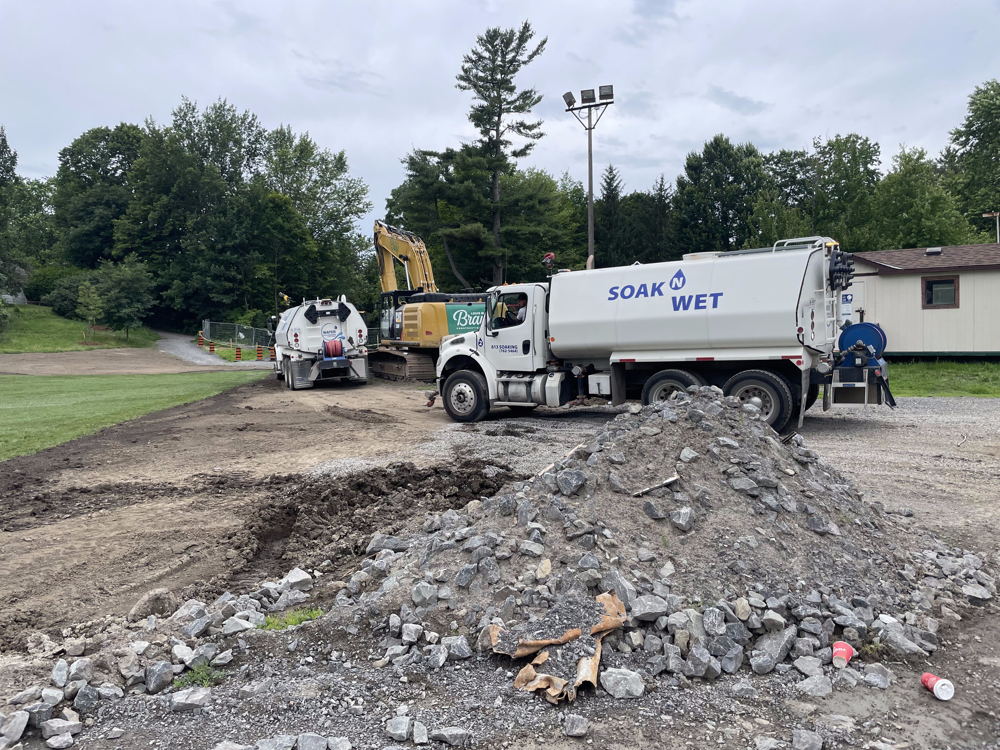
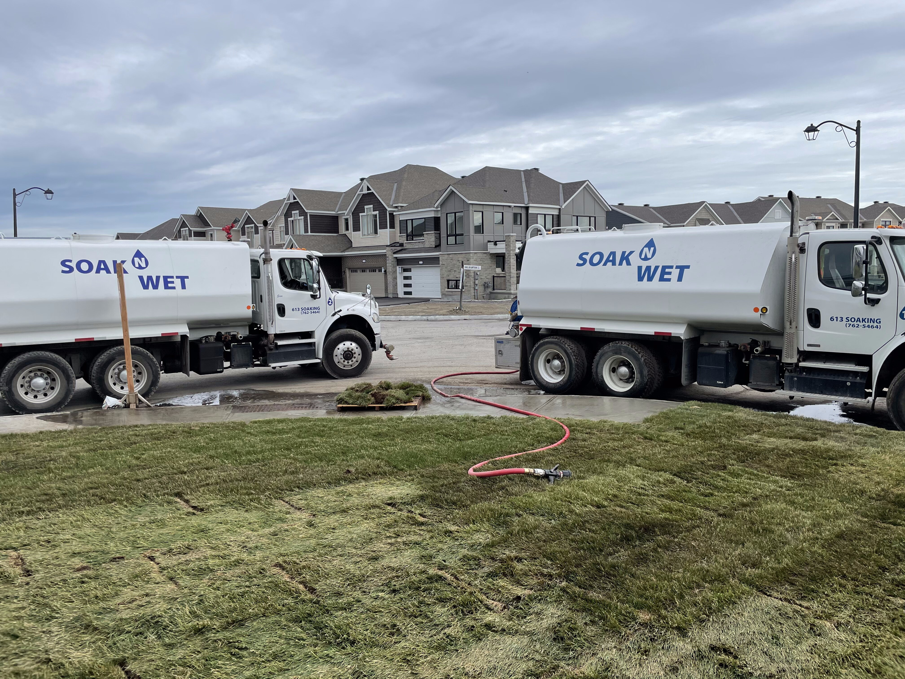
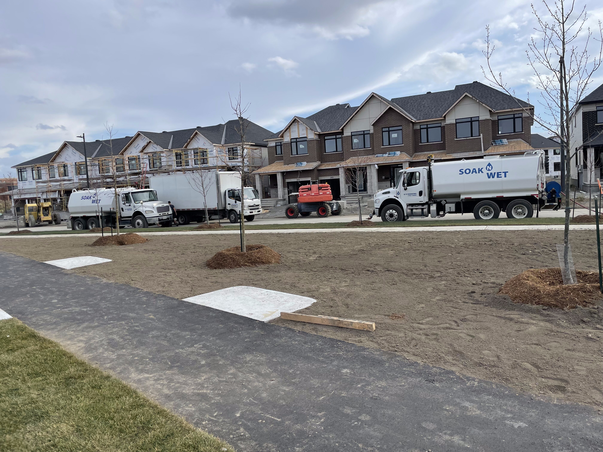
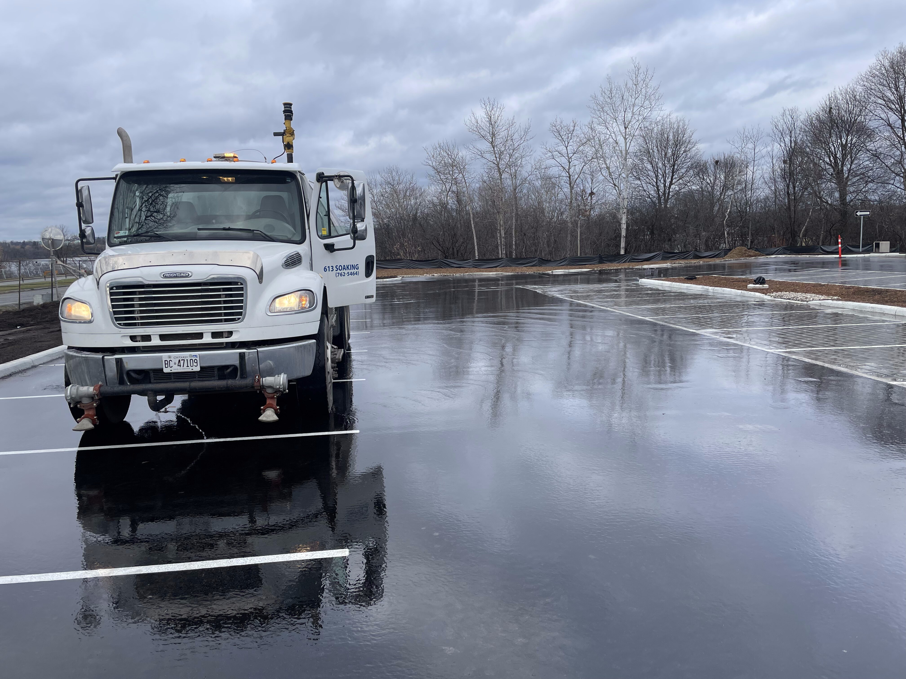

Our Services
Water Where
Water Where
You Need It
Nine categories of bulk water delivery, all available across Ottawa and the surrounding region. Same-day service on most requests.
Nine categories of bulk water delivery, all available across Ottawa and the surrounding region. Same-day service on most requests.
Nothing kills summer momentum like waiting for your pool to fill on a city hose. We deliver the volume you need in a fraction of the time — usually a few hours, not a few days.
Hot tubs too. Whether you're refilling after a drain-and-clean or filling a brand-new installation, we've got you covered.

Rural properties depend on their wells. When yours runs dry — whether from seasonal drought, high demand, or equipment failure — we get water to you fast so life doesn't stop.
We work with properties across Ottawa's rural fringes where city water isn't an option. One call and we'll assess your situation and schedule delivery.

Off-grid properties, seasonal cottages, and rural homes often rely on storage tanks rather than direct wells. We keep them filled on a schedule that works for you.
Set up a recurring delivery schedule and never worry about running out. We deliver directly to your tank, no fuss.
Active job sites need water — for concrete mixing, curing, compaction, and cleanup. We supply the volume you need on the schedule your project demands.
We work with general contractors, site managers, and owner-builders across the Ottawa region. Tell us your requirements and we'll build around your timeline.

Sod doesn't survive without water — and we move fast enough to keep up with your crew. Whether you're laying thousands of square feet or watering in new tree installations, we deliver the volume you need on-site, on time.
We work regularly with landscaping companies across Ottawa. One call and we'll coordinate with your schedule.


Building an outdoor rink this winter? We flood it fast so you're skating sooner. Whether it's a backyard rink or a community pad, we deliver the volume needed to get a solid base layer down in one visit.
Available across Ottawa and surrounding areas throughout the winter season. Book early — spots fill up fast once the cold hits.
Debris, mud, and construction runoff build up fast on site access roads and public streets near active projects. We flush roads clean — keeping sites compliant, reducing tracking, and protecting storm drains.
Used by general contractors, municipalities, and industrial sites across the Ottawa region.

Unpaved roads, demolition sites, grading operations, and staging areas all generate dust. We apply water to keep it down — protecting workers, neighbours, and equipment.
Particularly useful during dry Ottawa summers for gravel driveways, rural access roads, and active earthworks.
Water outages don't wait for business hours. When your supply is cut off — whether from infrastructure failure, contamination, or a burst main — we move fast to restore your supply.
Call us directly. We'll do our best to get a truck out the same day. No automated forms, no callback queues — a real person picks up.
Pricing depends on volume, distance, and service type. Call us for a fast, no-obligation quote — we'll give you a number on the spot.
(613) 762-5464